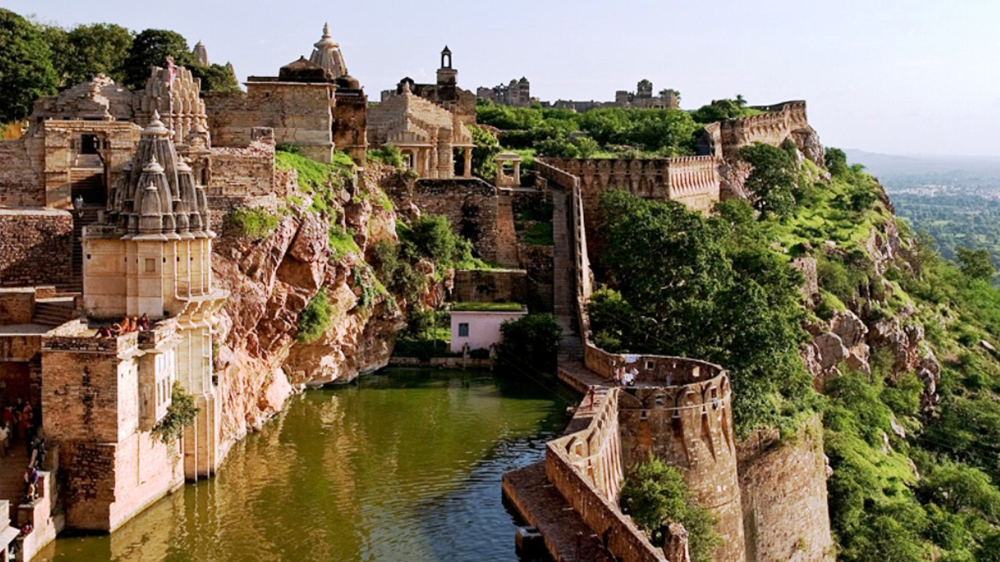

Chittorgarh Fort
Certainly! Chittorgarh Fort, also known as Chittor Fort, is one of the largest and most historically significant forts in India. It is located in the city of Chittorgarh in the state of Rajasthan.
Chittorgarh Fort has a rich and turbulent history. It was built in the 7th century AD by the Maurya dynasty. The fort was the capital of the Mewar Kingdom for many centuries and witnessed numerous battles and sieges. It is known for its association with figures like Rana Kumbha, Rana Sanga, and Rani Padmini, whose legendary stories are intertwined with the fort's history. The fort was besieged three times, most famously during the siege by Alauddin Khilji in 1303.